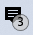
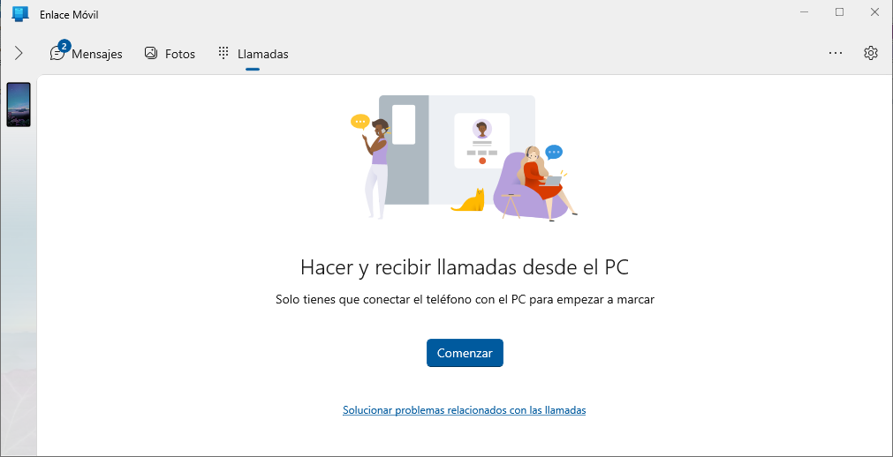
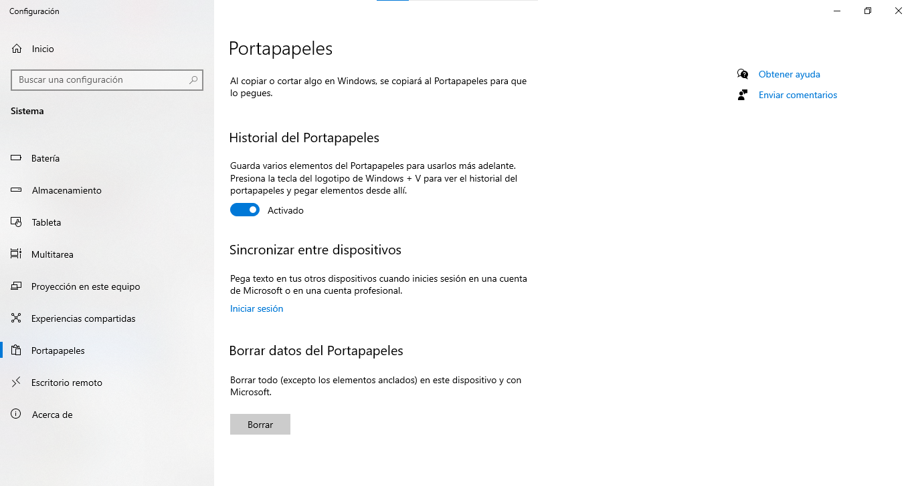

Características de Windows
- Escritorio: abarca la pantalla del monitor.
- Barra de tareas: sirve para ver o acceder a las aplicaciones y comprobar la hora, entre otras cosas. Podemos personalizarla de muchas maneras: cambiar el color y el tamaño, anclar las aplicaciones favoritas, moverla por la pantalla, etc. Al pulsar sobre ella con el botón derecho del ratón, aparece un menú con diferentes opciones como, por ejemplo, Configuración de la barra de tareas o Mostrar el escritorio, esta última minimiza todas las ventanas abiertas para visualizar el escritorio.
- Barra de búsqueda: es una herramienta muy útil para localizar un programa y ejecutarlo. Conforme vayamos escribiendo el nombre del programa a buscar, nos irá ofreciendo posibles resultados.
- Área de notificaciones: se encuentra en la esquina inferior derecha del escritorio . Muestra mensajes del sistema.
- Iconos de acceso directo: son iconos que nos permiten acceder más rápidamente a archivos, carpetas o programas. Al borrar un icono de acceso directo, el archivo, carpeta o programa no se borra.
- Explorador de archivos: nos permite gestionar fácilmente nuestros archivos y carpetas, con la posibilidad de tener a mano aquellos a los cuales accedemos con más frecuencia. Algunas herramienta interesantes son:
- La pestaña “Inicio”, ubicada en la esquina superior izquierda, contiene herramientas relacionadas con los archivos, incluyendo la posibilidad de copiar, pegar, seleccionar y eliminar, entre muchas otras.
- “Compartir”. Se selecciona el archivo que deseamos compartir y pulsamos sobre el icono de compartir. También tenemos disponibles opciones para grabar los archivos en un disco óptico, imprimirlos o enviarlos por fax, entre otros. Por otra parte, el sistema de almacenamiento en la nube OneDrive está integrado en el explorador, para poder utilizarlo basta con que hayamos iniciado sesión con una cuenta de Microsoft.
- Comprimir: comprime los archivos seleccionados y genera con ellos una carpeta zip en el mismo directorio.
- Botón “Vista de Tareas”: sirve para ver todas las aplicaciones, carpetas, escritorios y archivos que tenemos abiertos en ese momento. También es posible ejecutarlos desde aquí y gestionar la característica de escritorios múltiples.
- Snap Assist: sirve para tener hasta 4 aplicaciones en la misma pantalla, útil para comparar datos entre ventanas.
- Enlace Móvil: esta aplicación nos permite acceder de forma rápida a contenidos como fotos y mensajes de texto del móvil (Android). También permite escribir SMS y gestionar las llamadas desde el PC. Para conectar ambos dispositivos será necesario instalar en el móvil la aplicación Enlace Windows. Mediante un código QR se realizará la conexión.

- Línea de tiempo: para encontrar más fácilmente correos electrónicos, documentos o carpetas que hemos abierto anteriormente. El sistema nos muestra los movimientos que hemos realizado ordenados cronológicamente. Por ejemplo, si estamos escribiendo en un procesador de textos un documento y no nos da tiempo a terminarlo ese día, al día siguiente podemos ir a la línea de tiempo y reanudar esa actividad.
- To-Do: sirve para administrar de manera simple todas las tareas que tenemos por delante. Es multiplataforma, es decir, la podemos tener tanto en el PC como en el móvil, desde cualquiera de estos dispositivos podremos acceder a nuestra lista de tareas y organizarnos mejor.
- Recorte y anotación: es una herramienta para hacer captura de pantalla y anotaciones sobre esa captura. Podemos acceder a ella desde el menú Inicio o bien con Windows + MAYUSC + S. El recorte se guarda en el portapales, con CRTL+V podemos pegarlo en una aplicación.
- Portapapeles en la nube: Windows ha ampliado el portapapeles permitiendo que se pueda sincronizar en la nube el contenido del mismo de un ordenador para pegarlo en otro. Para activarla, hay que hacer clic en Configuración de Windows, después Sistema y luego Portapapeles y activar la casilla "Sincronizar entre dispositivos". En esta misma sección también podemos activar el historial del portapapeles. Esto nos permitirá copiar varios elementos en el portapapeles. Luego, al pulsar Windows + V, nos aparece una ventana con los elementos guardados donde deberemos pulsar en el que queramos pegar.

- La Asistencia rápida: permite a dos personas compartir un equipo mediante una conexión remota, de manera que una de las personas puede ayudar a resolver problemas en el equipo de la otra. Para ello, en el cuadro buscar escribimos "asistencia técnica" y pulsamos en la aplicación. Después de iniciar sesión, se generará un código que tendremos que compartir con la otra persona.
- Seguridad de Windows: Windows trae incorporado su propio antivirus, Microsoft Defender. También incluye un Firewall y muchas otras herramientas de seguridad.
- Cortana: es el asistente personal basado en la nube. Es necesario iniciar sesión con una cuenta de Microsoft y conceder permisos para que Cortana pueda acceder a la información del equipo. Esta información se usa para personalizar la experiencia del usuario de Cortana en cualquier dispositivo o servicio en el que haya habilitado Cortana. Más tarde, al comenzar a usar Cortana, podemos administrar esos permisos para que Cortana detenga la recopilación de datos.
- Navegador: Windows incluye el navegador Edge con las siguientes herramientas, accesibles desde el menú de 3 puntos:
-
Solucionario matemático (Microsoft Math Solver). Tiene un amplio abanico de utilidades con las que, gracias a su Inteligencia Artificial, podremos aprender matemáticas, mejorar nuestros conocimientos o resolver un problema.
-
Rendimiento. se puede activar este modo para reducir el consumo de ancho de banda y CPU.
-
Leer en voz alta: “CTRL + Mayús + U”. Una vez está activada, el navegador empezará a leer las palabras de la página web que tengamos abierta. En la herramienta se puede configurar su velocidad, pausar la lectura o cambiar incluso la voz en función del idioma que queramos que lea.
-
Colecciones: consiste en guardar contenido de internet de forma gráfica y organizada. No solo guarda un simple link o enlace a una web, además podremos guardar imágenes o fragmentos de texto en forma de notas.
-
Algunos trucos:
- Grabar pantalla sin necesidad de programas adicionales, gracias a la barra de xbox que incorpora Windows. Pulsar Window+G. Windows+alt +R, empieza a grabar de inmediato (si no tenemos desactivadas ciertas características de xbox).
- Emojis: Windows + ; o Windows +. En la segunda pestaña tenemos los kaomojis. 👌
- Borrado de notificaciones del área derecha del escritorio: con la rueda del ratón podemos eliminarlas más fácilmente sin tener que ir una por una.